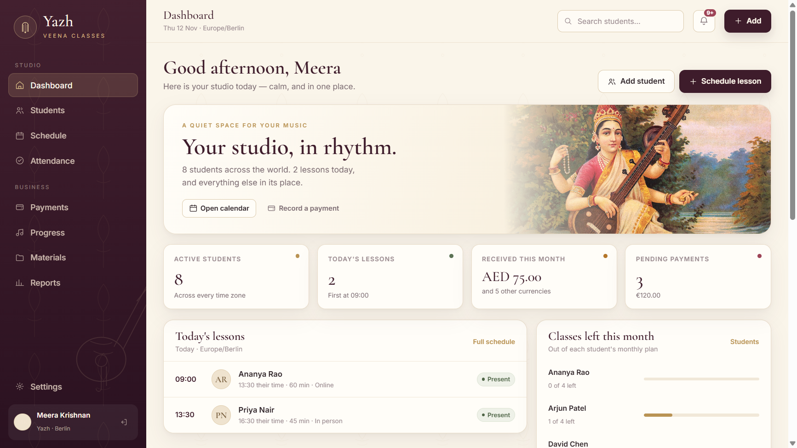
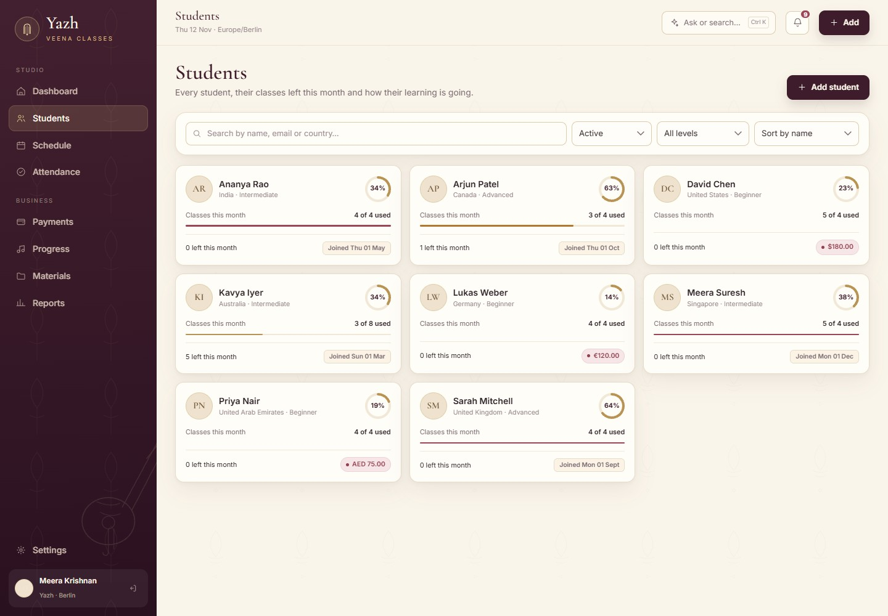
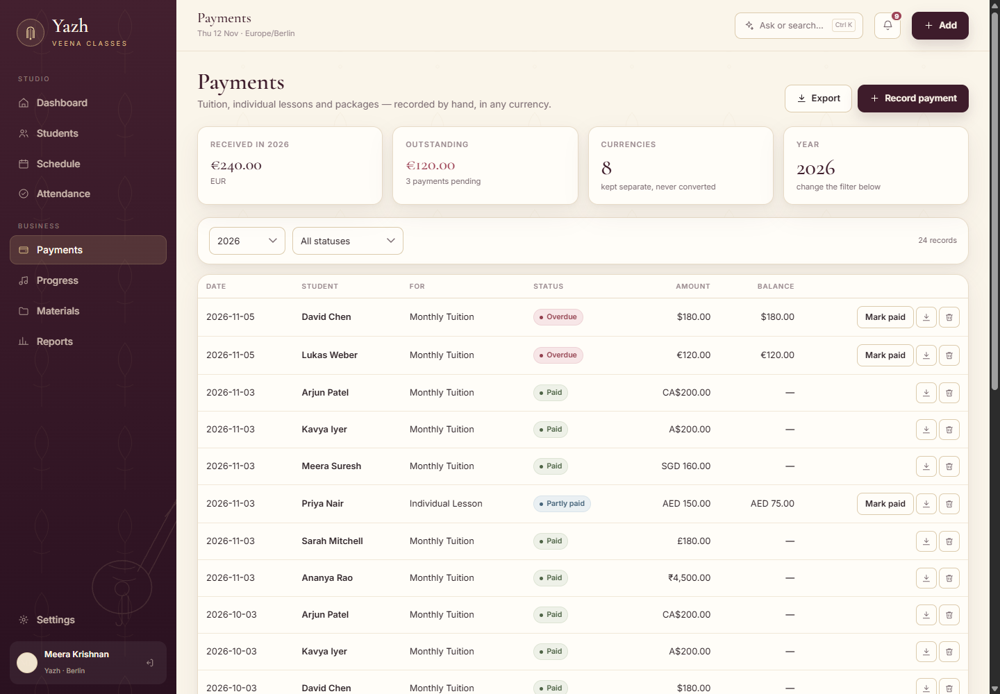
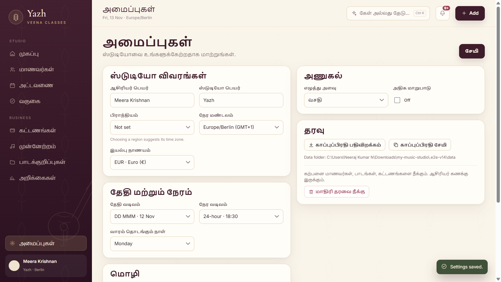

Yazh keeps a teaching studio in order: who is enrolled, which lessons are due, who attended, which fees are open, what each student is working on — and a notation sheet that prints.
It runs offline on one Windows computer, stores everything in a single file, and asks for no account.
Windows will warn you. The build is unsigned, so SmartScreen shows
“Windows protected your PC”. Click More info → Run anyway.
Data is written next to the .exe.
SHA-256 of the download:592152b43dc447e934ff9ac5de62846692f226bcd85e890a46d575a4b4bce7d8



